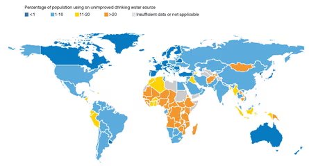
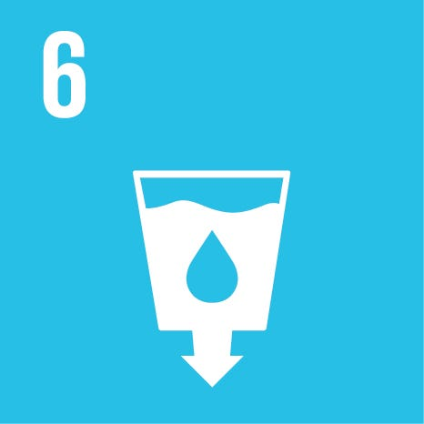
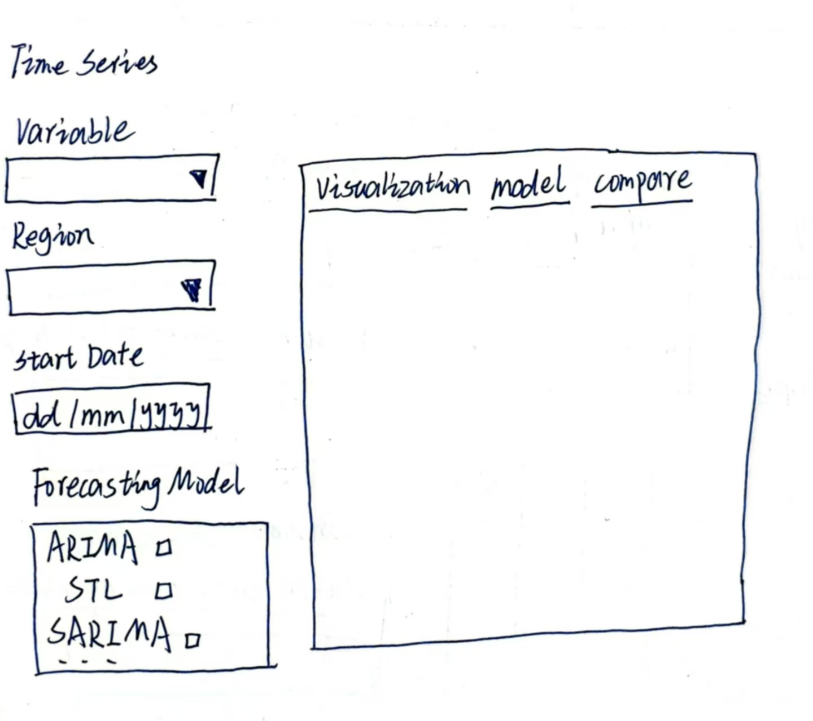
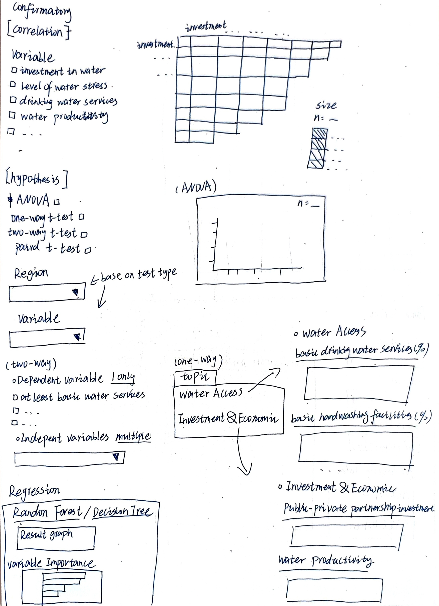
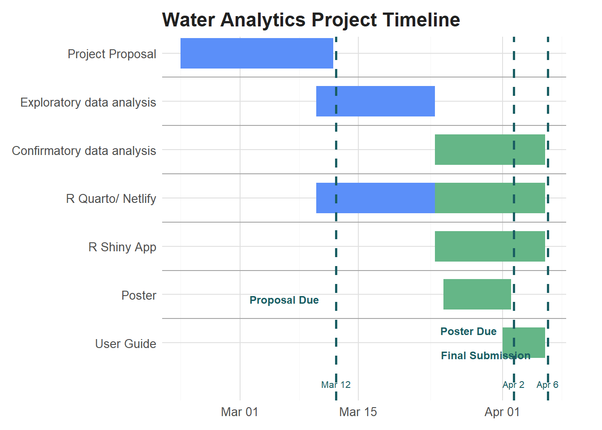

flowchart TD
subgraph "Water Accessibility and Safety Analysis"
A(OSF Typhoid outbreak & World Bank World WDI & Cholera Outbreak from Kaggle) --> B(Read Input)
subgraph "Data Preparation"
B --> C(Data Cleaning)
C --> C1(Handle Missing Values)
C1 --> C2(Remove Duplicates)
C2 --> C3(Standardize Formats)
C3 --> D(Filtering & Transformation)
D --> D1(Select Key Variables)
D1 --> E(Data Integration)
E --> E1(Merge WHO & WB Data)
E1 --> E2(Geocode for Mapping)
E2 --> E3(Final Data Processing)
E3 --> F(Prepare Data for Analysis)
end
F --> G
F --> H
F --> I
F --> J
subgraph "Geospatial Data Analysis"
G(Create Heat Maps)
H(Create Choropleth Maps)
I(Identify Spatial Disparities)
G --> L(Geospatial Insights)
H --> L
I --> L
end
subgraph "Time Series Analysis"
J(Trend & Forecasting) --> L1(ARIMA, STL, SARIMA)
L1 --> M(Project Future Trends)
M --> N(Interactive Time Sliders)
M --> O(Evaluate Forecasting Models)
end
L --> P
N --> P
O --> P
subgraph "Confirmatory Data Analysis"
P(Correlation Analysis)
P --> Q(Hypothesis Testing: t-test, ANOVA)
P --> R(Regression Models)
end
Q --> S
R --> S
subgraph "Data Exploration & Visualization"
S(Interactive Dashboard - Shiny App)
end
end
Project Proposal

Image source: The guardian
Motivation
Water is essential for life, yet millions around the world still lack access to clean water and sanitation. As of 2022, 2.2 billion people lacked safely managed drinking water and basic hand-washing facilities, 3.5 billion lacked safely managed sanitation and 2.4 billion lived in water-stressed countries.
Sustainable Development Goal 6 (SDG 6)aims to ensure universal access to water and sanitation. However, at the current pace, billions will continue to face these challenges by 2030.

Problem Statement
To meet Sustainable Development Goal 6 (SDG 6) targets, the global rate of progress must accelerate significantly — 6x for drinking water, 5x for sanitation, and 3x for hygiene. Achieving these targets would save 829,000 lives annually, the number of people who currently die each year from disease directly linked to unsafe water, inadequate sanitation and poor hygiene.
This project aims to analyze and visualize global water accessibility, sanitation trends and their impact on public health. Using data from the World Bank and health related dataset, we will:
Identify spatial disparities in clean water access and unsafe water-related deaths.
Analyze time-series trends to assess progress in water safety and sanitation overtime.
Examine statistical relationship between water access and disease prevalence (Cholera, Typhoid)
Assess investment gaps by analyzing government and international funding in water infrastructure and sanitation programs
Evaluate trans boundary water cooperation, identifying region where shared water resources requires coordinated management to improve accessibility and sustainability.
This project aims to support efforts in ensuring universal access to clean water and improving global health outcome through data driven approach
Data Source & Scope
This project will explore global trend in water accessibility sanitation and related health impacts using multiple datasets. The primary source is theWorld Development Indicators (WDI) from the World Bank, which compiles extensive development data across 266 countries from 1960 to 2023. Given the large dataset, only relevant indicators will be selected to align with the project’s objectives.
Potential variables from WDI may include indicators related to drinking water access, sanitation services, hygiene practices, water stress and water productivity. These factors will help assess disparities in water availability and quality across different regions.
Additionally, the project will incorporate health related datasets to examine the link between water conditions and waterborne disease prevalence:
Typhoid Fever Incidence (2000 -2022) from the Center for Open Science (OSF)
Cholera Case Data (from 1949 onward), extracted from the WHOon Kaggle
By integrating these data sources, the project aims to provide data-driven insight into the impact of water accessibility and sanitation on public health. This findings can help policy makers, organizations and government target resource more effectively to ensure equitable access to safe water and sanitation worldwide.
Methodology
Data Preparation
Before conducting any analysis, we will ensure that the dataset is clean, structured for analysis, and suitable for visualization. The following steps will be taken:
Data Cleaning:
- Handling Missing value (removal of incomplete records)
- Identify and remove duplicate records
- Standardize data formats (date formats, numerical conversions)
Filtering and Transformation
- Select key variables relevant to the study, such as clean water access,
Data Integration
- Merge data on typhoid outbreaks (2000–2022) from the Center for Open Science (OSF), cholera cases from the WHO (2000–2023) via Kaggle (extra from WHO), and World Development Indicators (WDI) from the World Bank (2000–2023) to analyze the relationship between waterborne diseases and access to unsafe water sources. This integration will help assess how trends in cholera and typhoid correlate with water quality and accessibility over time.
- Geocode data for geospatial visualization
Geospatial Data Analysis
The objective of the geospatial Data Analysis is to understand and identify spatial disparities in water accessibility and unsafe water-related deaths while assessing investment gaps and policy effectiveness.
Visualization Approach:
- Interactive heat map will be developed that represents:
- Areas with low access to clean water
- High Concentration of unsafe water usage
- Outbreak cases of Cholera and Typhoid
- Choropleth Maps will be used to illustrate severity levels with different color intensities represents:
Water stress levels and sanitation access disparities
Disease incidence across different region
Transboundary water cooperation gaps in shared water resources.
Policy effectiveness, comparing investment levels vs actual progress in improving water access and sanitation
Investment disparities in water and sanitation infrastructure showing region with high vs.low funding levels.
Time series Analysis
The object of this analysis is to identify the trend and predict future patterns in water safety and sanitation overtime and related health risks over time.
Incorporate forecasting models using Autoregressive Integrated Moving Average (ARIMA) for overall trend forecasting, Seasonal Decomposition of Time Series (STL) to analyse the seasonal variation and long term patterns and Seasonal Autoregressive Integrated Moving Average (SARIMA) to incorporate both trend and seasonality to project future trends in:
Water accessibility improvements over the years
Death rates linked to unsafe water (waterborne disease incidence trends).
Changes in sanitation coverage
Confirmatory Data Analysis (CDA)
The objective of confirmatory data analysis is to validate the statistical relationship between water accessibility sanitation and health outcomes using correlation, hypothesis testing and regression models.
Correlation Analysis
Assess the relationship between clean water access and the incidence of waterborne disease (Cholera & Typhoid)
Examine how unsafe water exposure correlates with mortality rates due to waterborne dieases.
Hypothesis Testing:
- Conduct t-tests and ANOVA to determine if significant different exist in water access levels across different regions.
Regression Modelling:
Evaluate the impact of sanitation access and clean water availability on the incidence of waterborne diseases
Quantify the extent to which improvements in water infrastructure reduce health risks.
Assess the effect of investment in water and sanitation on overall health outcomes.
Prototype
Geospatial Data Analysis
With this tab, users can freely select the variables they want to explore from 2012-2022. Additionally, by selecting different regions, they can gain deeper insights into specific areas. The data table below allows users to conveniently view detailed information.

Time series Analysis
This tab will display time series forecasting. Users can explore the basic information of the data and use different models for forecasting.

Confirmatory Data Analysis (CDA)
This tab will use statistical methods to analyze and validate the relationships between data based on user selections, providing a clearer understanding of the impact of water stress, sanitation, and hygiene.

R packages
The team intends to use the following R packages to develop and deploy the interactive visual analytics application
tidyverse: A family of modern R packages specially designed to support data science, analysis, and communication tasks, including creating static statistical graphs.
knitr: A report generation tool that facilitates dynamic document creation in R.
dplyr: An R package for data manipulation and working with data frames efficiently.
plotly: An R library for plotting interactive statistical graphs and visualizing data dynamically.
DT: An R interface to the JavaScript library DataTables, which creates interactive tables for HTML pages.
lubridate: An R package that simplifies working with dates and time elements.
ggforce: An extension of ggplot2 that provides additional geoms and stats for advanced visual data analysis.
highcharter: A wrapper around the ‘Highcharts’ JavaScript library, allowing for highly interactive and customizable plotting of R objects.
sf: An R package that supports the importing, managing, and processing of geospatial data, essential for mapping analysis.
spdep: An R package that facilitates spatial analysis by handling geospatial data dependencies and relationships.
Project Schedule
